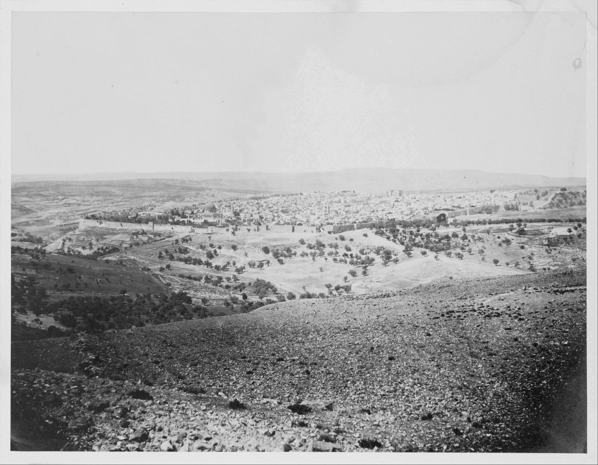

Degrees, Questions, et al.
This is a three-day workshop in semantics, with a focus on degrees, questions, and related matters. It takes place in the Language, Logic and Cognition Center at the Hebrew University in Jerusalem, from June 25 to June 27, 2023. The workshop is funded by the Halbert Centre for Canadian Studies. Everyone interested in semantics is welcome to attend.

Jerusalem in 1860s, as seen from Mt Scopus (John Anthony)
Schedule
Sunday, 25 June 2023
10:45-11:30
Expectations, anaphora, and the meanings of 'still'
Aynat Rubinstein, Hebrew University
11:30-12:15
Obligatory implicatures and the relevance of contradictions
Moshe Bar-Lev, Tel Aviv University
==
Lunch ==
13:30-14:15
A modal how
Marcin Morzycki, University of British Columbia
14:15-15:00
On the roles of anaphoricity and questions in free focus
Roni Katzir, Tel Aviv University
==
Tea & coffee ==
15:30-16:15
Different roads to verum focus
Noa Bassel, Hebrew University
16:15-17:00
How exhaustivity interacts with (de)accenting: the case of Given- and Contrastive Scalar Items
Itai Bassi, Leibniz-ZAS Berlin
==
Dinner ==
Monday, 26 June 2023
10:45-11:30
The domains of monotonicity: psycho- and neuro-linguistic considerations
Yosef Grodzinsky, Hebrew University
11:30-12:15
Are 'most' and 'more than half' truth-conditionally equivalent?
Milica Denić, Tel Aviv University
==
Lunch ==
13:30-14:15
Biased negative polar questions and embedding strategies in Japanese
Junko Shimoyama, McGill University
14:15-15:00
Overt and covert exclusive operators over non-overlap particles
Yael Greenberg, Bar Ilan University
==
Tea & coffee ==
15:30-16:15
Donkey choice
Luka Crnič, Hebrew University
16:15-17:00
Why isn't the King of France Bald?
Ariel Cohen, Ben Gurion University
Tuesday, 27 June 2023
10:00-10:45
Quantity division in semantic composition?
Bernhard Schwarz, McGill University
10:45-11:30
A constraint on co-occurrence of partitive quantifiers and gradable predicates
Omri Amiraz, Hebrew University
==
Tea & coffee ==
12:00-12:45
The mass-count distinction in the lexicon: Evidence from derivational suffixes
Olga Kagan, Ben Gurion University